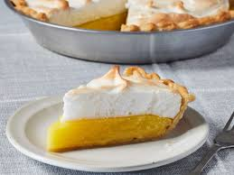

Lemon Meringue Pie

This is the worlds most delicious lemon meringue pie
Leamon meringue pie is a dessert pie that is made up of a shortened pastry base filled with lemon curd and topped with meringue.
This desert is most often times enjoyed by older people.
It has a nice and refereshing lemony taste due to the lemon curd.
Lemon meringue pie was believed to have been invented in the 18th century in france.
This pie may have been based on a similar pie that called for a apple curd or apple based filling.
It was also called lemon cream pie back in the day.
ingredients
- 1 cup white sugur
- 2 tablespoons of all purpose flour
- 3 tablespoons of cornstarch
- 1/4 teaspoon of salt
- 1 1/2 cup of water
- 2 lemons, juiced and zested
- 2 tablespoons of butter
- 4 egg yolks that are beaten
- 1 9 inch pie crust that is baked
- 4 egg whites
- 1/2 cup white sugar
Steps
- preheat oven to 325 degrees f
- whisk 1 cup sugur, flour, cornstarch, and salt together in a medium sauce pan
- stir in water, lemon juice, lemon zest and cook over medium high heat until it comes to a boil
- Stir in butter
- place egg yolks ijn a small bowl and gradully shisk in 1/2 cup of hot sugur mixture
- whisk egg tolk mixture back into the remaining sugur mixture and bring it to a boil until it is thick
- pour the fillung into the baked pastry shell
- to make the meringue beat egg whites until they are foamy and graduallt add sugur until stiff peaks form
- spread meringue over pie filling. make sure to seal the edges at the crust
- bake in oven until golden brown. This should take about 20 to 25 min